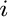
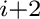

Next: energy_data.radii_factor scale Up: The energy_data class: objective Previous: energy_data.dynamic_modeller calculate Contents Index
This specifies whether or not the atoms in a chemical bond, chemical angle, dihedral angle, and in the excluded pairs list respectively are considered in the construction of the non-bonded atom pairs list, and distance restraints. This is especially useful when simplified protein representations are used; e.g., when non-bonded restraints need to be used on Cα - Cα terms.